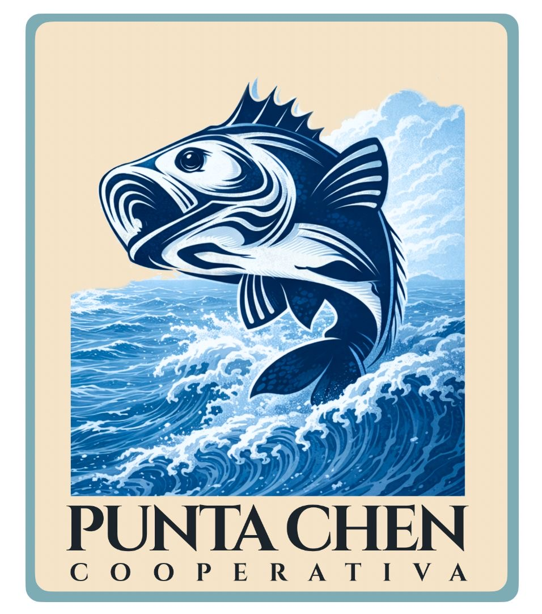

Agua y hielo con control local
Nuestra planta de agua purificada y producción de hielo fortalece la operación del grupo al garantizar la cadena de frío y abastecer a empresas y comunidades.
Conocer la PurificadoraGrupo Punta Chen
Calidad, confianza y desarrollo sostenible en Quintana Roo.
Operamos una red que integra producción pesquera, hielo y agua purificada, conectando la riqueza del mar con oportunidades reales para nuestra gente.
Quiénes somos
Grupo Punta Chen nació con una visión clara: transformar el trabajo del mar en oportunidades para las personas y en crecimiento para la región.
Desde 2008 hemos evolucionado de una cooperativa pesquera a un grupo que integra tres líneas estratégicas de negocio: producción pesquera, producción de hielo y agua purificada.
Hoy trabajamos bajo un mismo principio: ofrecer productos y servicios de calidad mientras impulsamos el desarrollo sostenible de nuestra comunidad.
Nuestras unidades
Nuestra planta de agua purificada y producción de hielo fortalece la operación del grupo al garantizar la cadena de frío y abastecer a empresas y comunidades.
Conocer la Purificadora
Nuestra cooperativa nació del esfuerzo de pescadores comprometidos con su comunidad y con la conservación de los recursos marinos.
Conocer la CooperativaNuestra operación
Coordinamos pesca, producción de hielo, agua purificada y logística para mantener una cadena de suministro eficiente que responde a las necesidades de hoteles, restaurantes, comercios y comunidades de la región.
Trabajamos con procesos coordinados para garantizar disponibilidad, frescura y control desde el origen.
La producción de hielo protege la calidad del producto durante almacenamiento, transporte y entrega.
Suministramos agua purificada con procesos estandarizados para empresas y consumidores finales.
Respondemos con rapidez gracias a una operación cercana, conocimiento del mercado y compromiso con la comunidad.
Listos para colaborar